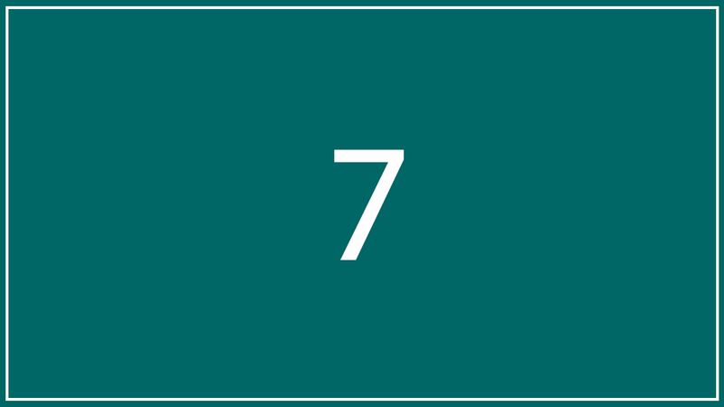

<!DOCTYPE html>
<html>
<head>
<meta charset="UTF-8">
<title>Insert title here</title>
<script src="https://cdnjs.cloudflare.com/ajax/libs/jquery/3.6.0/jquery.min.js"></script>
<style type="text/css">
	img{
		width:100px;
	}
	
	ul,li{
		margin: 10px;
		list-style: none;
		border: 1px solid gray;
		float: left;
		padding: 10px;
	}
	
	li{
		border: 1px solid #ccc;
	}
</style>
<script type="text/javascript">
	$(function() {
		// append(), appendTo()
		// before() : 선택자 이전에 객체 추가
		$('#img').before('<li></li>');
		
		// insertBefore() : 선택자 이전에 객체 추가 $(추가할HTML).insertBefore(선택자)
		$('<li></li>').insertBefore('#img');
		
		// after() : 선택자 다음에 객체 추가
		$('#img').after('<li></li>');
		
		// insertAfter() : 선택자 다음에 객체 추가  $(추가할HTML).insertAfter(선택자);
		$('<li id="copy"></li>').insertAfter('#img');
		
		// prepend() : 선택자의 내용중에 제일 앞쪽에 객체추가
		$('ul').prepend('<li>');
		
		// prependTo() : 선택자의 내용중에 제일 앞쪽에 객체 추가  $(추가할HTML).prependTo(선택자);
		$('<li></li>').prependTo('ul');
		
		// clone() : 객체를 복제한다.
		var copy = $('#copy').clone();
		// 아아디 중복x 속성의 값을 변경
		copy.attr('id','copy2')
		$('ul').append(copy);
		
		// empty() : 선택자의 내용을 지운다.
		$('#copy2').empty();
		
		// remove() : 선택자와 내용을 지운다.
		$('#img').remove();
		
		// replaceAll() : 선택자 객체를 치환  $(추가할HTML).replace(선택자);
		$('<li id="txt"><h1>Color</h1></li>').replaceAll('#copy2');
		
		// replaceWith() : 선택자와 내용을 다른 내용으로 치환
		$('#txt').replaceWith('<h2>Replace</h2>');
	})
</script>
</head>
<body>
<ul>
	<li id="img">
		
	</li>
</ul>
</body>
</html>